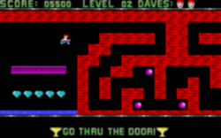
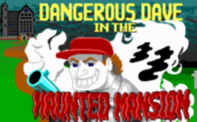
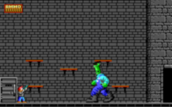
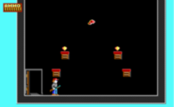
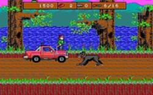
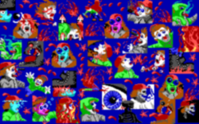

Скрин игры.
Dangerous Dave — напейсанный широко известным в узких кругах далёких восьмидесятых Джоном Ромеро для Яблока платформер, слизанный с Марио чуть более, чем полностью и впоследствии портированный на PC. Как платформер 1988 года выпуска, игра получилась вполне так хороша. Но наибольшую любовь и признание олдфагов этой страны, а тогда ещё школоты безбородой, заслужило продолжение:

Зря они похитили его брата!

Неведомая ёбаная хуйня в сапогах-забродах. 4 уровень.
А начиналось всё просто: реднекообразный Дейв остановил свой пикап около особняка, прихватил дробовик и зашёл. Игрок мог считаться потерянным для общества на хороший срок.
Что же выделяло Dangerous Dave in the Haunted Mansion среди многочисленных аркад того времени (конец 80-х — это настоящий золотой век аркад):
Dangerous Dave in the Haunted Mansion — это вторая[1] игра с smooth EGA scrolling. Запакована расово верным PKLite, при этом в .exe хранилась только анимация смертей Дейва. И вообще, представляет собой настоящий щедеврь погромистской мысли: Кармак документацию по EGA где-то упёр и нашёл регистр горизонтального панорамирования.
Почему она так шустро бегала даже на очень слабых машинах, даже того времени? А разгадка одна — прегенерация сдвинутых на два пиксела спрайтов, чтобы не заниматься этим в процессе отрисовки.
На одном из уныл-форумов имеет место напиленный фонатаме редактор для второго Дейва; в скором времени обещают мод для всех частей, а также Кинов и Shadow Knights. Лютый вин и вторая жизнь сабжа.

Секрет в самом начале.

Третья часть.

Гуро!!!111
Игр было всего 4, при этом если движки трех последних как-то и были похожи друг на друга (хотя и не были одинаковыми), то первый имеет свой, особый ряд ценителей, не принимающих сюжетных ходов мясного продолжения. Да, энциклопедист-кунам не рекомендуется припоминать еще и «копирайт инфрайтмент», так как последний являлся не пятой полноценной игрой, а всего лишь демонстрацией движка вследствие копирайт-холивора с запильщиками Марио…
Алсо, был безумно доставляющий Shadow Knights, стремительный и беспощадный, от тех же ID.
В интернетах! Архив занимает всего 180 кб.
Алсо, существует порт на JAVA. Рекомендуем — порт почти 1 в 1.
Тысячи их! Первый — Commander Keen от ID (состоит из 6 частей плюс еще «Keen Dreams» и игры на консолях). К нему были добавлены хорошие, годные моды тут.
{kind=link}
{kind=link}
{kind=link}
{kind=link}
{kind=link}
{kind=link}